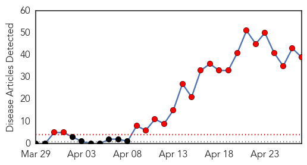

MERS
30-Day Web Trend
21 alerts, 0 warnings

30-Day Twitter Trend
8 alerts, 0 warnings

Article Locations

Article Confidences

Top Articles:
- 1.000
- The MERS Coronavirus
- 0.999
- Coronavirus Spreads From Saudi Arabia to Europe, No Cure or Vaccine so far
- 0.999
- The Deadly MERS Virus Outbreak Is Spreading Worldwide
- 0.999
- Egypt reports first MERS coronavirus case in man returning from Saudi Arabia
- 0.999
- Travel and tourism threat: Killer virus Middle East Respiratory Syndrome (MERS) is spreading
- 0.999
- MERS cases spike to 339 in Saudi Arabia
- 0.999
- MERS virus: Saudi Arabia reports 8 more deaths
- 0.999
- MERS virus: Saudi Arabia reports 8 more deaths
- 0.999
- Saudi Arabia registers 26 more cases after Egypt discovers first patient — RT News
- 0.998
- Expert calls for wider testing as virus fear grows
- 0.998
- Saudi Arabia MERS death toll reaches 94
- 0.998
- Saudi Arabia MERS death toll rises above 100
- 0.998
- Gov’t steps up efforts against MERS-CoV
- 0.998
- Deadly MERS virus reaches Egypt
- 0.998
- S Arabia reports eight new MERS deaths
- 0.998
- Two patients die from MERS as virus spreads in Saudi Arabia
- 0.998
- DH closely monitors seven additional overseas MERS cases reported to WHO
- 0.997
- Saudi Arabia: eight more deaths due to MERS
- 0.997
- Saudi MERS Deaths Top 100 Fueling Public Fear — Naharnet
- 0.997
- MERS death toll tops 100 in Saudi Arabia
- 0.996
- Saudi Arabia reports 8 more deaths from MERS virus
- 0.996
- Eight more MERS deaths reported in Saudi Arabia
- 0.996
- Saudi Mers death toll passes 100
- 0.995
- Saudi Arabia reports 11 new cases of MERS virus, first in Mecca
- 0.995
- Eight more cases of Mers-CoV tested negative in UAE
- 0.994
- Saudi Mers toll tops 100, fuelling fear
- 0.987
- MERS claims 94th victim in Saudi Arabia
- 0.986
- SARS-Related Virus Deaths Continue In Saudi Arabia
- 0.981
- Saudi Arabia says has 10 more cases in MERS outbreak
- 0.981
- Saudi Arabia reports five new MERS deaths
- 0.980
- The MERS menace: death toll nears 100 in Saudi Arabia
- 0.979
- Saudi MERS death toll passes 100 mark
- 0.967
- Saudi reports five new MERS deaths, taking toll to 92
- 0.961
- Egypt takes preventive measures against coronavirus
- 0.952
- KUNA : Egypt denies new coronavirus cases
- 0.946
- MERS claims 94th victim; 3 specialist centers set upHealthcare
- 0.881
- No provision under Medical Act to allow specialists to amputate limbs
- 0.858
- Expats guard against coronavirus
- 0.620
- Health Ministry needs overhaul
Top Tweets:
-
No tweets found for Apr 27, 2014
Unknown
30-Day Web Trend
0 alerts, 0 warnings
30-Day Twitter Trend
4 alerts, 0 warnings

Article Locations
Article Confidences
Top Articles:
- 0.999
- Rising Saudi death toll from MERS
- 0.999
- Egypt discovers first case of potentially deadly MERS virus
- 0.997
- Saudi Arabia confirms 26 more cases, 10 deaths
- 0.997
- Egypt's Red Sea ports on alert against Saudi Arabia's MERS virus
- 0.995
- More MERS Virus Cases Documented in Saudi Arabia in Past 24 Hours
- 0.995
- Saudi MERS deaths top 100
- 0.993
- Egypt reports first case of MERS
- 0.985
- Saudi Arabia reports 26 more cases in MERS outbreak, 10 dead
- 0.984
- 36 cases of jaundice reported in Cuttack
- 0.981
- Farsnews
- 0.978
- Saudi Arabia says 10 more cases in MERS outbreak
- 0.976
- Saudi Arabia has 26 more cases of MERS virus, 10 dead • Horseed
- 0.972
- Saudi Arabia has 26 more cases of MERS virus, 10 dead
- 0.972
- Saudi Arabia has 26 more cases of MERS virus, 10 dead
- 0.967
- Ten more die of MERS in Saudi Arabia
- 0.917
- Chicago Tribune
- 0.917
- Chicago Tribune
- 0.917
- Chicago Tribune
- 0.917
- Chicago Tribune
- 0.910
- The world windows to Thailand
- 0.910
- The world windows to Thailand
- 0.907
- the edge of knowledge
- 0.891
- Killer virus wipes out more than 10 percent of US pig population
- 0.876
- Deadly Middle East Respiratory Syndrome spreads to Egypt
- 0.866
- Libyan oil port Zueitina will only open after damages assessed-minister
- 0.866
- Bomb search of Norwegian plane yields nothing
- 0.847
- ER symptoms ‘consistent’ with MCHM exposure
- 0.660
- Pork Prices Even Higher As Killer Virus Spreads
- 0.659
- Killer virus spreads unchecked through U.S. hog belt, pushing pork to record
- 0.627
- Ontario girl, 11, offers warning on effects of untreated Lyme disease that could lead to arthritis
- 0.602
- How Lebanon's doctors are taking on cultural taboos surrounding schizophrenia
- 0.576
- Sudan Vision Daily
- 0.504
- Lymphoma among fastest growing cancers worldwide (Health Feature)
Top Tweets:
- 0.555
- Saudi MoH: 16 new MERS cases today including 4 deaths, plus death of 4 cases were reported lately. http://t.co/z94eMYkMZu